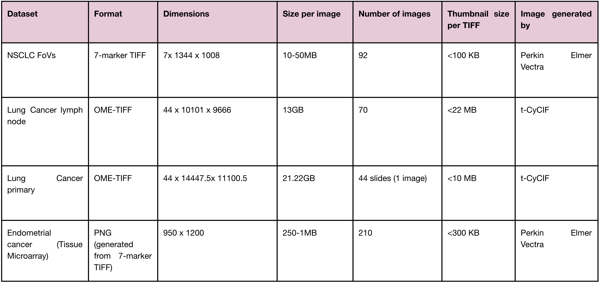
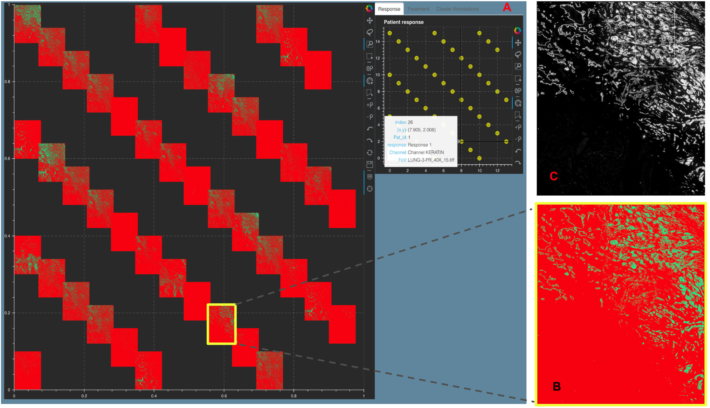
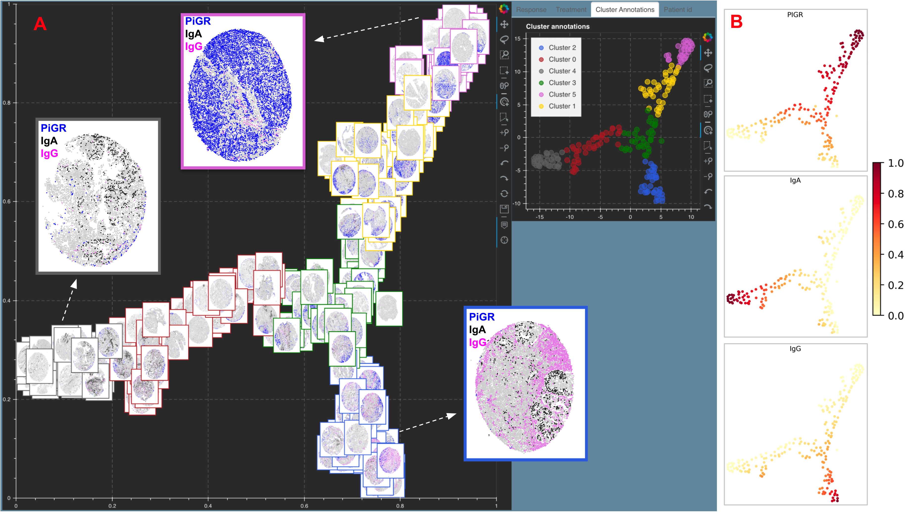

5. Mistic experiments¶
5.1. Datasets used to test Mistic¶
{kind=link}
Table listing the different datasets Mistic has been tested on
5.2. Non-small cell lung cancer¶

Figure showing Response 1 and Response 2 patients with NSCLC have significantly different cellular compositions. A. 2D t-SNE plot showing three clusters annotated with the differentially expressed markers per cluster. Clusters are obtained using the tumor-immune cell counts at the tumor border where the borders are estimated using convex hulls approximations. B. Same t-SNE as in (A) depicting the disease response spread. C. Image t-SNE using same t-SNE coordinates as in (A) illustrating the gradient of immune cells across images. A higher colocalization of immune cells (shown in green) is seen for Response 1 patients.
5.3. Lung adenocarcinoma metastasis to lymph node¶

Figure showing Mistic on the Lung adenocarcinoma lymph t-CyCIF data. The static canvas shows 70 repeats of the Lung t-CyCIF image arranged in rows. Mistic gives the composite image using 6 markers (CD45, Keratin, aSMA, FoXP3, PD-1, PD-L1). The live canvas shows proxy cluster assignments. We discuss how to run Mistic on this data here: Vignettes on public data 6.1.
5.4. Primary lung squamous cell carcinoma¶
{kind=link}
Figure showing a Stack Montage from Mistic for the Primary Lung t-CyCIF data with 44 markers. A. The static canvas shows all 44 markers and the live canvas shows the tSNE scatter plot. We identify the Keratin channel using the live canvas (shown with hover tool details) and highlight the Keratin thumbnail in yellow in the static canvas. B. The zoomed in Keratin thumbnail (file name obtained from the hover tool) and C. The t-CyCIF image for Keratin as viewed using Minerva [45]. Minerva provides the single marker views for 12 markers whereas with Mistic we can view all 44 channels as a montage. We discuss how to run Mistic on this data here: Vignettes on public data 6.2.
5.5. Tissue Microarray cores for Endometrial cancer¶
{kind=link}
Figure showing A. Image tSNE rendering using Mistic for 210 Tissue Microarray (TMA) cores of Endometrial cancer. Each core depicts plGr on tumor cells (blue), IgA (black), IgG (pink), plasma cells (red), additional B-cells (green) and unstained cells (gray). Each core has a border that matches the cluster it belongs to (see the Cluster annotations live panel). Representative cores from each of the clusters dominated by pIgr, IgA and IgG are shown. B. tSNE scatter plot showing the marker spread computed from the 210x5 count matrix prior to clustering.